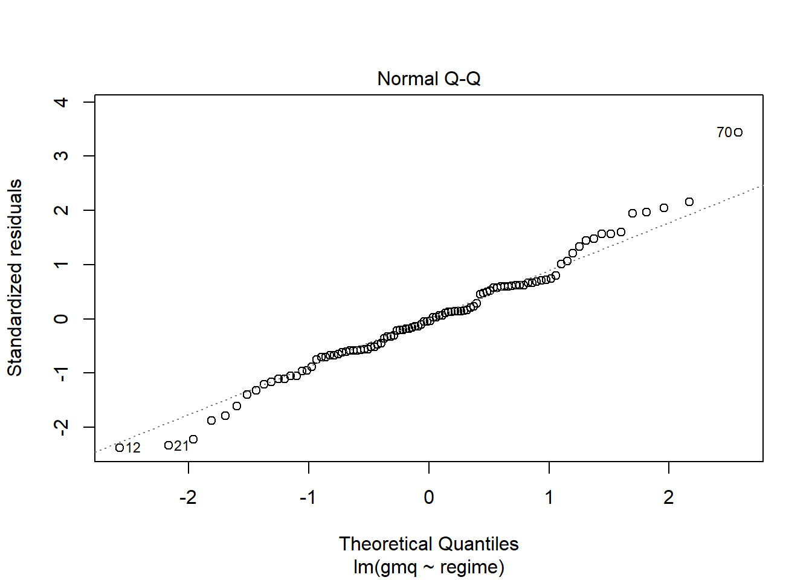

Chapitre 2 Gain moyen quotidien
2.1 Les données
##
## -- Column specification --------------------------------------------------------
## cols(
## matiere = col_character(),
## regime = col_character(),
## masse_debut_croissance = col_double(),
## masse_fin_croissance = col_double(),
## gain_de_masse = col_double(),
## duree_j = col_double(),
## gain_moyen = col_double(),
## gmq = col_double()
## )2.2 Visualisation, boxplots
ggplot(data = dg, aes(x = regime, y = gmq)) +
geom_boxplot() +
xlab("Régimes") + ylab("Gain moyen quotidien (g)") +
theme(axis.text.x = element_text(angle = 45, color = "black", vjust = 1, hjust = 1)) +
theme_bw()
2.3 Identification des valeurs extrêmes aberrantes
dg_out <- dg %>%
group_by(regime) %>%
identify_outliers(gmq)
dg_out %>% select(id, regime, matiere, gmq, is.outlier, is.extreme)## # A tibble: 4 x 6
## id regime matiere gmq is.outlier is.extreme
## <int> <fct> <chr> <dbl> <lgl> <lgl>
## 1 50 BA 2.5 Borassus 1.38 TRUE FALSE
## 2 70 BA 7.5 Borassus 1.67 TRUE FALSE
## 3 91 WC mais blanc 0.05 TRUE FALSE
## 4 90 YC mais jaune 1 TRUE FALSE=> Il n’y a pas de valeur extrême.
2.4 Le Modèle
## Anova Table (Type II tests)
##
## Response: gmq
## Sum Sq Df F value Pr(>F)
## regime 3.1534 9 4.6136 5.031e-05 ***
## Residuals 6.8349 90
## ---
## Signif. codes: 0 '***' 0.001 '**' 0.01 '*' 0.05 '.' 0.1 ' ' 1Différence très significative entre les effets d’au moins 2 régimes sur le GMQ. Mais vérifions les conditions de validité avant toute interprétation.
2.5 Vérification des conditions de l’ANOVA
2.5.1 Hypothèse de normalité
Test de significativité comparant la distribution de l’échantillon à une distribution normale afin de déterminer si les données montrent ou non un écart important par rapport à la distribution normale.
Il existe plusieurs méthodes pour évaluer la normalité, notamment le test de normalité de Kolmogorov-Smirnov (K-S) et le test de Shapiro-Wilk.
- Ho. la distribution de l’échantillon est normale (ou n’est pas différente d’une distribution normale).
Si p-value > 0,05 alors la distribution des données n’est pas significativement différente de la distribution normale. Alors on accepte Ho.
## # A tibble: 1 x 3
## variable statistic p.value
## <chr> <dbl> <dbl>
## 1 residuals(lm_gmq) 0.982 0.181p-value > 0.05, alors distribution normale
Vérification supplémentaire avec le plot ci-dessous :

Plot des résidus standardisés vs quantiles théoriques : les points sont bien répartis le long de la ligne, sauf le point 70 identifié comme aberrant. Sa suppression améliorerait la distribution mais on le garde. On pourrait supposer que les résidus sont distribués selon une loi normale.
2.5.2 Homogénéité des variances
On pourra utiliser le test de Levene, ou celui de Barlett, ou encore celui de Fligner-Killeen. Pour ces tests :
Ho. Toutes les variances des populations (traitements) sont égales.H1ouHa. Au moins deux d’entre elles diffèrent.
Par conséquent, des valeurs p inférieures à 0,05 suggèrent que les variances sont significativement différentes et donc que l’hypothèse d’homogénéité des variances n’est pas respectée.
## Levene's Test for Homogeneity of Variance (center = median)
## Df F value Pr(>F)
## group 9 2.2203 0.02759 *
## 90
## ---
## Signif. codes: 0 '***' 0.001 '**' 0.01 '*' 0.05 '.' 0.1 ' ' 1La p-value < 0.05 => Variances non homogènes => Alternative non paramétrique : Test de Kruskal-Wallis recommandé lorsque les hypothèses du test ANOVA à un facteur ne sont pas respectées.
Vérification supplémentaire avec le plot ci-dessous :
Plot des résidus standardisés vs valeurs prédites : les dispersions des résidus (leurs écartements verticaux) relatives à chaque regime ne sont pas identiques. L’hypothèse d’homogénéité des résidus n’est pas respectée.
2.5.3 Alternative non-paramétrique, test de Kruskal-Wallis
## # A tibble: 1 x 6
## .y. n statistic df p method
## * <chr> <int> <dbl> <int> <dbl> <chr>
## 1 gmq 100 35.6 9 0.0000463 Kruskal-WallisLa p-value < 0.05 => Ce qui signifie qu’il y a une différence significative entre les effets d’au moins 2 régimes.
Un test de Kruskal-Wallis significatif est généralement suivi d’un test de Dunn pour identifier les groupes différents entre eux. Le test de Dunn tient compte du classement utilisé par celui de Kruskal-Wallis. Il fait aussi des ajustements pour les exaequos.
2.5.4 Comparaisons par paires, test de Dunn
Pour comparer les effets des regimes deux à deux. Ce code n’affiche seulement que les paires ayant des effets significativement différents.
dg %>%
dunn_test(gmq ~ regime, p.adjust.method = "bonferroni") %>%
select(group1, group2, p, p.adj, p.adj.signif) %>%
filter(p.adj.signif != "ns")## # A tibble: 4 x 5
## group1 group2 p p.adj p.adj.signif
## <chr> <chr> <dbl> <dbl> <chr>
## 1 BA 0.25 BA 5 0.000239 0.0107 *
## 2 BA 0.5 BA 5 0.000401 0.0181 *
## 3 BA 1 BA 5 0.000117 0.00528 **
## 4 BA 2.5 BA 5 0.000294 0.0132 *Ce sont les paires de régimes dont les effets sur le GMQ sont significativement différents.
Si on devait afficher toutes les comparaisons, voici ce que ça donne :
dg %>%
dunn_test(gmq ~ regime, p.adjust.method = "bonferroni") %>%
select(group1, group2, p, p.adj, p.adj.signif)## # A tibble: 45 x 5
## group1 group2 p p.adj p.adj.signif
## <chr> <chr> <dbl> <dbl> <chr>
## 1 BA 0.25 BA 0.5 0.893 1 ns
## 2 BA 0.25 BA 0.75 0.244 1 ns
## 3 BA 0.25 BA 1 0.859 1 ns
## 4 BA 0.25 BA 10 0.0884 1 ns
## 5 BA 0.25 BA 2.5 0.957 1 ns
## 6 BA 0.25 BA 5 0.000239 0.0107 *
## 7 BA 0.25 BA 7.5 0.272 1 ns
## 8 BA 0.25 WC 0.00641 0.289 ns
## 9 BA 0.25 YC 0.00209 0.0942 ns
## 10 BA 0.5 BA 0.75 0.303 1 ns
## # ... with 35 more rowsIl reste encore 35 lignes de comparaisons 2 à 2 à afficher. Voila pourquoi j’ai choisi de n’afficher plus haut que les paires où les différences d’effet sont significatives.
2.5.5 Visualisation graphique
Calcul des moyennes ci-dessous, pour le classement manuel (identifier les groupes). Le graphique automatique un peu complexe !
cm <- dg %>%
select(regime, gmq) %>%
group_by(regime) %>%
summarise_all(list(gmq_moyen = mean, sd = sd)) %>%
data.table::setorder(-gmq_moyen)
cm## # A tibble: 10 x 3
## regime gmq_moyen sd
## * <fct> <dbl> <dbl>
## 1 BA 1 0.925 0.243
## 2 BA 0.5 0.912 0.387
## 3 BA 2.5 0.871 0.268
## 4 BA 0.25 0.857 0.126
## 5 BA 7.5 0.77 0.356
## 6 BA 0.75 0.711 0.336
## 7 BA 10 0.675 0.353
## 8 WC 0.517 0.202
## 9 YC 0.485 0.227
## 10 BA 5 0.413 0.0806J’ajoute les lettres à la main :
## # A tibble: 10 x 4
## regime gmq_moyen sd groups
## * <fct> <dbl> <dbl> <chr>
## 1 BA 1 0.925 0.243 a
## 2 BA 0.5 0.912 0.387 a
## 3 BA 2.5 0.871 0.268 a
## 4 BA 0.25 0.857 0.126 a
## 5 BA 7.5 0.77 0.356 ab
## 6 BA 0.75 0.711 0.336 ab
## 7 BA 10 0.675 0.353 ab
## 8 WC 0.517 0.202 ab
## 9 YC 0.485 0.227 ab
## 10 BA 5 0.413 0.0806 bggplot(data = cm, aes(x = regime, y = gmq_moyen)) +
geom_bar(stat = "identity", color = "blue", fill = "grey", width = 0.6) +
xlab("Régimes") + ylab("Gain moyen quotidien (g)") +
geom_text(aes(label = groups), vjust = -0.5, size = 4) +
theme_bw()